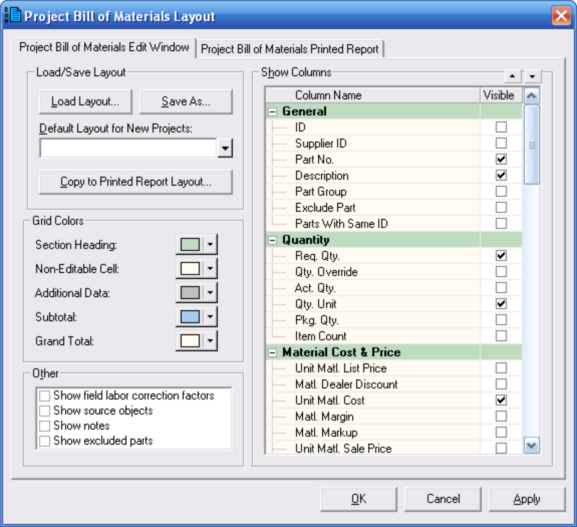

Project Bill of Materials Layout Dialog (Project Bill of Materials Window) |
  
|
Project Bill of Materials Layout Dialog (Project Bill of Materials Window) |
|
Icon:  . Keyboard Shortcut: ALT, C, L
. Keyboard Shortcut: ALT, C, L
Opens the Project Bill of Materials Layout dialog, pictured below, where you can select which columns of data to include in your project bill of materials, as well as set the background colors and other options. You can set up the layout for the Project Bill of Materials edit window to be completely different from the layout for the Bill of Materials printed report.

Load Layout: Lets you load a previously saved layout into the dialog.
Save As: Saves the layout settings currently shown on the dialog to a file for future use.
Default Layout for New Projects: Specifies the filename of a layout that you want to use for new Bill of Materials projects. If left blank, the program's internal default layout will be used for new projects.
Grid Colors: Lets you specify colors for various parts of the project bill of materials grid.
Other: These checkboxes specify various options of things that you can include in the project bill of materials.
Show Columns: Specifies which of the over 70 available columns of data you want to include in the project bill of materials. You can include as many columns as you like, but the number of them visible at a time is limited to your screen resolution (or your page width, for the printed report).
OK: Applies your changes on this dialog and closes it.
Cancel: Closes this dialog without making any further changes.
Apply: Applies your changes on this dialog without closing it.